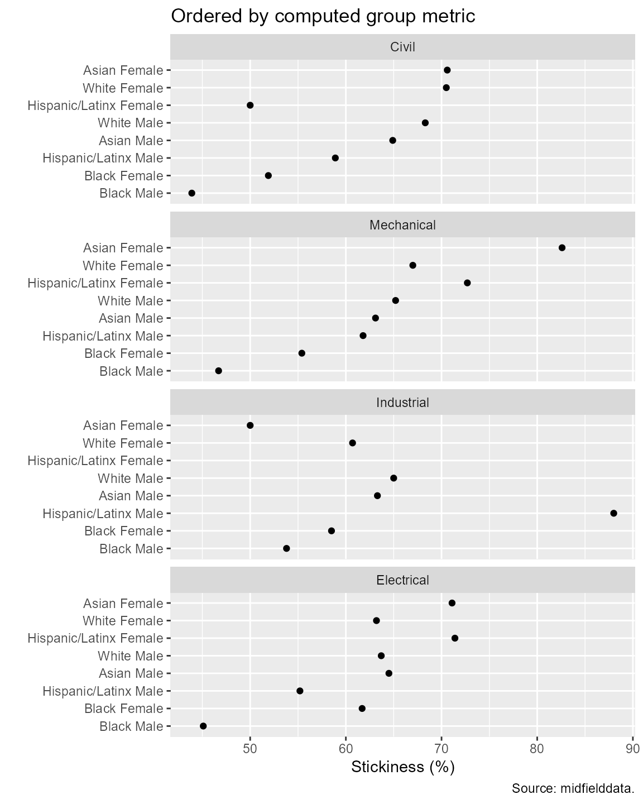

Case study stickiness
Richard Layton
2021-07-17
Source:vignettes/art-006-case-study-stickiness.Rmd
art-006-case-study-stickiness.RmdIntroduction
We continue the case study, a tour of a typical workflow with student unit record data. Again, for the sake of brevity we focus on the logic of the analysis and leave the detailed discussion of functions and arguments to later vignettes.
Assuming you completed the introduction to the four data tables (in Getting started), the case study has four parts:
- Case study programs
- Case study students
- Case study stickiness ◁ You are here.
- Case study graduation rate
Longer vignettes with detailed development of methods and functions related to this part of the study include:
Longitudinal stickiness
Longitudinal stickiness is the ratio of the number of students graduating in a program to the number of students ever enrolled in that program after accounting for the data sufficiency and timely completion criteria [1].
Stickiness measures the extent to which a program succeeds in its basic goal of graduating the students it admits, without regard to how or when a student is admitted to a program—the metric includes students who begin college part-time, enroll mid-year, switch majors, or transfer, in addition to first-time-in-college students.
In this vignette
Starting with the study_student data frame from the previous vignette (Case study students), we:
- Apply the timely completion criterion
- Tally students ever enrolled in a program by race/ethnicity, and sex
- Tally students completing a program by race/ethnicity, and sex
- Compute and graph the stickiness
- Save the results
We use the following midfieldr functions
The vignette output is the data frame study_stickiness.
Apply the timely completion criterion
If you are writing your own script to follow along, we start with these packages:
# packages used
library("midfieldr")
library("midfielddata")
suppressMessages(library("data.table"))
library("ggplot2")
# optional code to control data.table printing
options(
datatable.print.nrows = 6,
datatable.print.topn = 3,
datatable.print.class = TRUE
)
# load data tables from midfielddata
data(degree)If you saved your results from the previous vignette in the file results/case_student.csv, you can read them back in to your workspace using the following where we specify that the CIP and timely term columns are character variables to prevent them being read as integers.
# Optional
case_program <- fread("results/case_student.csv",
colClasses = c(
cip6 = "character",
timely_term = "character"
))If not, the data are included with midfieldr as the study_student data set. View its help page by running
? study_studentIn the remainder of the vignette, we assume we’re using the study_student data frame. A reminder of its contents:
# Loaded with midfieldr
study_student
#> mcid institution cip6 program race sex timely_term
#> <char> <char> <char> <char> <char> <char> <char>
#> 1: MID25783197 Institution M 140801 Civil White Male 19923
#> 2: MID25783441 Institution M 140801 Civil White Male 19973
#> 3: MID25783553 Institution M 140801 Civil White Male 20073
#> ---
#> 8217: MID26695626 Institution L 143501 Industrial White Male 20143
#> 8218: MID26696116 Institution L 143501 Industrial White Female 20153
#> 8219: MID26696429 Institution L 143501 Industrial White Female 20153
#> data_sufficiency
#> <lgcl>
#> 1: TRUE
#> 2: TRUE
#> 3: TRUE
#> ---
#> 8217: TRUE
#> 8218: TRUE
#> 8219: TRUEThe data sufficiency criterion has been applied. As usual, we assign our working data frame to DT.
# Create a new memory location to avoid updating by reference
DT <- copy(study_student)Before we can count the number of graduates, we have to assess whether graduates complete their program in a timely manner. A student graduating later than their timely-completion term are grouped with non-graduates for purposes of computing a persistence metric.
The add_completion_timely() function accesses the degree data to determine the term of a student’s first degree (if any), compares it to the student’s timely completion term, and reports whether the degree term satisfies the timely completion criterion.
# Determine whether the timely completion criterion is satisfied
DT <- add_completion_timely(DT, midfield_degree = degree)
# Examine the result
DT
#> mcid institution cip6 program race sex
#> <char> <char> <char> <char> <char> <char>
#> 1: MID25783178 Institution M 143501 Industrial Black Male
#> 2: MID25783197 Institution M 140801 Civil White Male
#> 3: MID25783388 Institution M 141901 Mechanical White Male
#> ---
#> 8217: MID26697163 Institution L 141901 Mechanical Hispanic/Latinx Male
#> 8218: MID26697444 Institution L 141901 Mechanical White Male
#> 8219: MID26697447 Institution L 141001 Electrical Asian Male
#> timely_term data_sufficiency completion_timely
#> <char> <lgcl> <lgcl>
#> 1: 20003 TRUE TRUE
#> 2: 19923 TRUE TRUE
#> 3: 19923 TRUE FALSE
#> ---
#> 8217: 20143 TRUE TRUE
#> 8218: 20153 TRUE TRUE
#> 8219: 20163 TRUE TRUESummarize by group
The variables we group by are program, race/ethnicity, and sex. It has proven convenient over the years to combine race/ethnicity and sex into its own column.
# Construct one of the grouping variables.
DT[, race_sex := paste(race, sex)]
# Examine the result
DT
#> mcid institution cip6 program race sex
#> <char> <char> <char> <char> <char> <char>
#> 1: MID25783178 Institution M 143501 Industrial Black Male
#> 2: MID25783197 Institution M 140801 Civil White Male
#> 3: MID25783388 Institution M 141901 Mechanical White Male
#> ---
#> 8217: MID26697163 Institution L 141901 Mechanical Hispanic/Latinx Male
#> 8218: MID26697444 Institution L 141901 Mechanical White Male
#> 8219: MID26697447 Institution L 141001 Electrical Asian Male
#> timely_term data_sufficiency completion_timely race_sex
#> <char> <lgcl> <lgcl> <char>
#> 1: 20003 TRUE TRUE Black Male
#> 2: 19923 TRUE TRUE White Male
#> 3: 19923 TRUE FALSE White Male
#> ---
#> 8217: 20143 TRUE TRUE Hispanic/Latinx Male
#> 8218: 20153 TRUE TRUE White Male
#> 8219: 20163 TRUE TRUE Asian MaleWe assign the grouping variables to a vector.
# A reusable vector for grouping, summarizing, and joining.
grouping_variables <- c("program", "race_sex")Starting with our working data frame DT, we count the enrollees by groups and assign the result to the new ever column. The result is a new data frame with only 55 rows since we have aggregated the counts.
# Create a new memory location to avoid updating by reference
enrolled <- copy(DT)
# Count
enrolled <- enrolled[, .(ever = .N), by = grouping_variables]
# Examine the result
enrolled
#> program race_sex ever
#> <char> <char> <int>
#> 1: Industrial Black Male 106
#> 2: Civil White Male 1147
#> 3: Mechanical White Male 1940
#> ---
#> 53: Civil International Female 1
#> 54: Mechanical Native American Female 5
#> 55: Industrial Native American Female 1Returning to our working data frame DT, we subset rows satisfying the timely-completion criterion.
# Create a new memory location to avoid updating by reference
completed <- copy(DT)
# Limit the graduate count to those with timely completion
completed <- completed[completion_timely == TRUE]
# Examine the result
completed
#> mcid institution cip6 program race sex
#> <char> <char> <char> <char> <char> <char>
#> 1: MID25783178 Institution M 143501 Industrial Black Male
#> 2: MID25783197 Institution M 140801 Civil White Male
#> 3: MID25783441 Institution M 140801 Civil White Male
#> ---
#> 5168: MID26697163 Institution L 141901 Mechanical Hispanic/Latinx Male
#> 5169: MID26697444 Institution L 141901 Mechanical White Male
#> 5170: MID26697447 Institution L 141001 Electrical Asian Male
#> timely_term data_sufficiency completion_timely race_sex
#> <char> <lgcl> <lgcl> <char>
#> 1: 20003 TRUE TRUE Black Male
#> 2: 19923 TRUE TRUE White Male
#> 3: 19973 TRUE TRUE White Male
#> ---
#> 5168: 20143 TRUE TRUE Hispanic/Latinx Male
#> 5169: 20153 TRUE TRUE White Male
#> 5170: 20163 TRUE TRUE Asian MaleWe count the graduates and assign the result to the new grad column.
# Obtain count of graduates
completed <- completed[, .(grad = .N), by = grouping_variables]
# Examine the result
completed
#> program race_sex grad
#> <char> <char> <int>
#> 1: Industrial Black Male 57
#> 2: Civil White Male 783
#> 3: Electrical White Male 870
#> ---
#> 49: Mechanical Native American Female 3
#> 50: Civil Native American Male 1
#> 51: Industrial Native American Female 1Now we join the two data frames, setting all.x = TRUE to retain all rows of enrolled.
# Join
DT <- merge(enrolled, completed, by = grouping_variables, all.x = TRUE)
# Examine the result
DT
#> program race_sex ever grad
#> <char> <char> <int> <int>
#> 1: Civil Asian Female 17 12
#> 2: Civil Asian Male 37 24
#> 3: Civil Black Female 54 28
#> ---
#> 53: Mechanical Other/Unknown Male 48 28
#> 54: Mechanical White Female 291 195
#> 55: Mechanical White Male 1940 1265
# Merging created a data.table "key" that we delete
setkey(DT, NULL)In this case, the completed data has fewer rows than the enrolled data so the merge() introduced some NA values in the grad column.
Those NA values are better encoded as zeros.
# NA in this case represents a count of zero
DT[is.na(grad), grad := 0][]
#> program race_sex ever grad
#> <char> <char> <int> <int>
#> 1: Civil Asian Female 17 12
#> 2: Civil Asian Male 37 24
#> 3: Civil Black Female 54 28
#> ---
#> 53: Mechanical Other/Unknown Male 48 28
#> 54: Mechanical White Female 291 195
#> 55: Mechanical White Male 1940 1265
# Examine the result
DT
#> program race_sex ever grad
#> <char> <char> <int> <int>
#> 1: Civil Asian Female 17 12
#> 2: Civil Asian Male 37 24
#> 3: Civil Black Female 54 28
#> ---
#> 53: Mechanical Other/Unknown Male 48 28
#> 54: Mechanical White Female 291 195
#> 55: Mechanical White Male 1940 1265Compute stickiness
Stickiness is the ratio of graduates to enrollees by group.
# data table printing option
options(datatable.print.topn = 40)
# Reached our goal of computing longitudinal stickiness
DT[, stick := round(100 * grad / ever, 1)]
# Examine the result
DT
#> program race_sex ever grad stick
#> <char> <char> <int> <int> <num>
#> 1: Civil Asian Female 17 12 70.6
#> 2: Civil Asian Male 37 24 64.9
#> 3: Civil Black Female 54 28 51.9
#> 4: Civil Black Male 98 43 43.9
#> 5: Civil Hispanic/Latinx Female 10 5 50.0
#> 6: Civil Hispanic/Latinx Male 56 33 58.9
#> 7: Civil International Female 1 0 0.0
#> 8: Civil International Male 14 6 42.9
#> 9: Civil Native American Male 7 1 14.3
#> 10: Civil Other/Unknown Female 6 3 50.0
#> 11: Civil Other/Unknown Male 16 5 31.2
#> 12: Civil White Female 329 232 70.5
#> 13: Civil White Male 1147 783 68.3
#> 14: Electrical Asian Female 38 27 71.1
#> 15: Electrical Asian Male 197 127 64.5
#> 16: Electrical Black Female 154 95 61.7
#> 17: Electrical Black Male 304 137 45.1
#> 18: Electrical Hispanic/Latinx Female 14 10 71.4
#> 19: Electrical Hispanic/Latinx Male 67 37 55.2
#> 20: Electrical International Female 8 4 50.0
#> 21: Electrical International Male 71 42 59.2
#> 22: Electrical Native American Female 3 0 0.0
#> 23: Electrical Native American Male 8 4 50.0
#> 24: Electrical Other/Unknown Female 8 5 62.5
#> 25: Electrical Other/Unknown Male 28 14 50.0
#> 26: Electrical White Female 193 122 63.2
#> 27: Electrical White Male 1366 870 63.7
#> 28: Industrial Asian Female 40 20 50.0
#> 29: Industrial Asian Male 60 38 63.3
#> 30: Industrial Black Female 94 55 58.5
#> 31: Industrial Black Male 106 57 53.8
#> 32: Industrial Hispanic/Latinx Female 6 4 66.7
#> 33: Industrial Hispanic/Latinx Male 25 22 88.0
#> 34: Industrial International Female 5 3 60.0
#> 35: Industrial International Male 22 12 54.5
#> 36: Industrial Native American Female 1 1 100.0
#> 37: Industrial Native American Male 1 0 0.0
#> 38: Industrial Other/Unknown Female 3 3 100.0
#> 39: Industrial Other/Unknown Male 2 0 0.0
#> 40: Industrial White Female 234 142 60.7
#> 41: Industrial White Male 494 321 65.0
#> 42: Mechanical Asian Female 23 19 82.6
#> 43: Mechanical Asian Male 122 77 63.1
#> 44: Mechanical Black Female 83 46 55.4
#> 45: Mechanical Black Male 214 100 46.7
#> 46: Mechanical Hispanic/Latinx Female 11 8 72.7
#> 47: Mechanical Hispanic/Latinx Male 76 47 61.8
#> 48: Mechanical International Female 3 1 33.3
#> 49: Mechanical International Male 37 19 51.4
#> 50: Mechanical Native American Female 5 3 60.0
#> 51: Mechanical Native American Male 14 8 57.1
#> 52: Mechanical Other/Unknown Female 8 7 87.5
#> 53: Mechanical Other/Unknown Male 48 28 58.3
#> 54: Mechanical White Female 291 195 67.0
#> 55: Mechanical White Male 1940 1265 65.2
#> program race_sex ever grad stickYou could save the DT data frame as a CSV file to your results directory for easy access as we work through the study.
# Assumes you have a results folder in the project directory
fwrite(DT, file = "results/case_stickiness.csv")These results have been included with midfieldr as the built-in data set study_stickiness. View its help page by running
? study_stickinessView the data frame,
study_stickiness
#> program race_sex ever grad stick
#> <char> <char> <int> <int> <num>
#> 1: Civil Asian Female 17 12 70.6
#> 2: Civil Asian Male 37 24 64.9
#> 3: Civil Black Female 54 28 51.9
#> 4: Civil Black Male 98 43 43.9
#> 5: Civil Hispanic/Latinx Female 10 5 50.0
#> 6: Civil Hispanic/Latinx Male 56 33 58.9
#> 7: Civil International Female 1 0 0.0
#> 8: Civil International Male 14 6 42.9
#> 9: Civil Native American Male 7 1 14.3
#> 10: Civil Other/Unknown Female 6 3 50.0
#> 11: Civil Other/Unknown Male 16 5 31.2
#> 12: Civil White Female 329 232 70.5
#> 13: Civil White Male 1147 783 68.3
#> 14: Electrical Asian Female 38 27 71.1
#> 15: Electrical Asian Male 197 127 64.5
#> 16: Electrical Black Female 154 95 61.7
#> 17: Electrical Black Male 304 137 45.1
#> 18: Electrical Hispanic/Latinx Female 14 10 71.4
#> 19: Electrical Hispanic/Latinx Male 67 37 55.2
#> 20: Electrical International Female 8 4 50.0
#> 21: Electrical International Male 71 42 59.2
#> 22: Electrical Native American Female 3 0 0.0
#> 23: Electrical Native American Male 8 4 50.0
#> 24: Electrical Other/Unknown Female 8 5 62.5
#> 25: Electrical Other/Unknown Male 28 14 50.0
#> 26: Electrical White Female 193 122 63.2
#> 27: Electrical White Male 1366 870 63.7
#> 28: Industrial Asian Female 40 20 50.0
#> 29: Industrial Asian Male 60 38 63.3
#> 30: Industrial Black Female 94 55 58.5
#> 31: Industrial Black Male 106 57 53.8
#> 32: Industrial Hispanic/Latinx Female 6 4 66.7
#> 33: Industrial Hispanic/Latinx Male 25 22 88.0
#> 34: Industrial International Female 5 3 60.0
#> 35: Industrial International Male 22 12 54.5
#> 36: Industrial Native American Female 1 1 100.0
#> 37: Industrial Native American Male 1 0 0.0
#> 38: Industrial Other/Unknown Female 3 3 100.0
#> 39: Industrial Other/Unknown Male 2 0 0.0
#> 40: Industrial White Female 234 142 60.7
#> 41: Industrial White Male 494 321 65.0
#> 42: Mechanical Asian Female 23 19 82.6
#> 43: Mechanical Asian Male 122 77 63.1
#> 44: Mechanical Black Female 83 46 55.4
#> 45: Mechanical Black Male 214 100 46.7
#> 46: Mechanical Hispanic/Latinx Female 11 8 72.7
#> 47: Mechanical Hispanic/Latinx Male 76 47 61.8
#> 48: Mechanical International Female 3 1 33.3
#> 49: Mechanical International Male 37 19 51.4
#> 50: Mechanical Native American Female 5 3 60.0
#> 51: Mechanical Native American Male 14 8 57.1
#> 52: Mechanical Other/Unknown Female 8 7 87.5
#> 53: Mechanical Other/Unknown Male 48 28 58.3
#> 54: Mechanical White Female 291 195 67.0
#> 55: Mechanical White Male 1940 1265 65.2
#> program race_sex ever grad stickCheck that the two data frames are identical,
all.equal(DT, study_stickiness)
#> [1] TRUEIn subsequent vignettes, you can read in the case_stickiness data from your results directory or you can use the study_stickiness data provided with midfieldr.
Graph the results
We do some data conditioning before presenting the results. Even with students and institutions de-identified, privacy is at risk for small populations, so we omit observations with fewer than 10 students ever enrolled.
# Omit before graphing
DT <- DT[ever >= 10]We also omit rows with ambiguous values for race/ethnicity (International and Other/Unknown). Having graphed the results in advance, we find that the small population subset removed Native American students from all but one of the disciplines—so we add them to the list of observations to omit.
# data table printing option
options(datatable.print.topn = 3)
# Omit before graphing
DT <- DT[!race_sex %ilike% c("International|Other|Native")]
# Examine the result
DT
#> program race_sex ever grad stick
#> <char> <char> <int> <int> <num>
#> 1: Civil Asian Female 17 12 70.6
#> 2: Civil Asian Male 37 24 64.9
#> 3: Civil Black Female 54 28 51.9
#> ---
#> 29: Mechanical Hispanic/Latinx Male 76 47 61.8
#> 30: Mechanical White Female 291 195 67.0
#> 31: Mechanical White Male 1940 1265 65.2Condition the data for graphing using condition_multiway(). The comments give a brief clue to the purpose of each argument. We’ll use it here without lengthy explanation (covered in detail in a separate vignette).
DT <- condition_multiway(
dframe = DT, # input data frame
categ_col = c("program", "race_sex"), # multiway categorical variables
quant_col = "stick", # multiway quantitative variable
detail = FALSE, # do not return detail columns
order_by = "percent", # stickiness (a percentage) used to order rows and panels
param_col = c("grad", "ever") # parameters for computing group stickiness
)
# Examine the result
DT
#> program race_sex ever grad stick
#> <fctr> <fctr> <num> <num> <num>
#> 1: Civil Asian Female 17 12 70.6
#> 2: Civil Asian Male 37 24 64.9
#> 3: Civil Black Female 54 28 51.9
#> ---
#> 29: Mechanical Hispanic/Latinx Male 76 47 61.8
#> 30: Mechanical White Female 291 195 67.0
#> 31: Mechanical White Male 1940 1265 65.2Because stickiness is a percentage, we can use the “percent” method for ordering: panels are ordered by program stickiness (ignoring race/ethnicity and sex) and rows are ordered by race/sex stickiness (ignoring program).
ggplot(data = DT, aes(x = stick, y = race_sex)) +
facet_wrap(vars(program), ncol = 1, as.table = FALSE) +
geom_point(na.rm = TRUE) +
labs(
x = "Stickiness (%)",
y = "",
title = "Ordered by computed group metric",
caption = "Source: midfielddata."
)
Observations: The graph illustrates how the ordering of rows and panels are crucial to what Cleveland calls the “asymmetry in the perception of effects.” For example, consider the low stickiness of Hispanic/Latinx women in Civil Engineering (given their overall high stickiness across all programs) or the high stickiness of Hispanic/Latinx men in Industrial Engineering (given their overall low stickiness across all programs).
Recall, however, that these are practice data, not research data—suitable for learning about student-record analysis, but not for drawing inferences about student performance.
References
Appendix
Complete script
The vignette code chunks are collected below in a single, condensed script.
# packages used
library("midfieldr")
library("midfielddata")
suppressMessages(library("data.table"))
library("ggplot2")
# load data tables from midfielddata
data(degree)
# Apply the timely completion criterion
DT <- copy(study_student)
DT <- add_completion_timely(DT, midfield_degree = degree)
# Summarize by group
DT[, race_sex := paste(race, sex)]
grouping_variables <- c("program", "race_sex")
enrolled <- copy(DT)
enrolled <- enrolled[, .(ever = .N), by = grouping_variables]
completed <- copy(DT)
completed <- completed[completion_timely == TRUE]
completed <- completed[, .(grad = .N), by = grouping_variables]
DT <- merge(enrolled, completed, by = grouping_variables, all.x = TRUE)
setkey(DT, NULL)
DT[is.na(grad), grad := 0][]
# Compute longitudinal stickiness
DT[, stick := round(100 * grad / ever, 1)]
# Graph the results
DT <- DT[ever >= 10]
DT <- DT[!race_sex %ilike% c("International|Other|Native")]
DT <- condition_multiway(
dframe = DT, # input data frame
categ_col = c("program", "race_sex"), # multiway categorical variables
quant_col = "stick", # multiway quantitative variable
detail = FALSE, # do not return detail columns
order_by = "percent", # stickiness (a percentage) used to order rows and panels
param_col = c("grad", "ever") # parameters for computing group stickiness
)
ggplot(data = DT, aes(x = stick, y = race_sex)) +
facet_wrap(vars(program), ncol = 1, as.table = FALSE) +
geom_point(na.rm = TRUE) +
labs(
x = "Stickiness (%)",
y = "",
title = "Ordered by computed group metric",
caption = "Source: midfielddata."
)